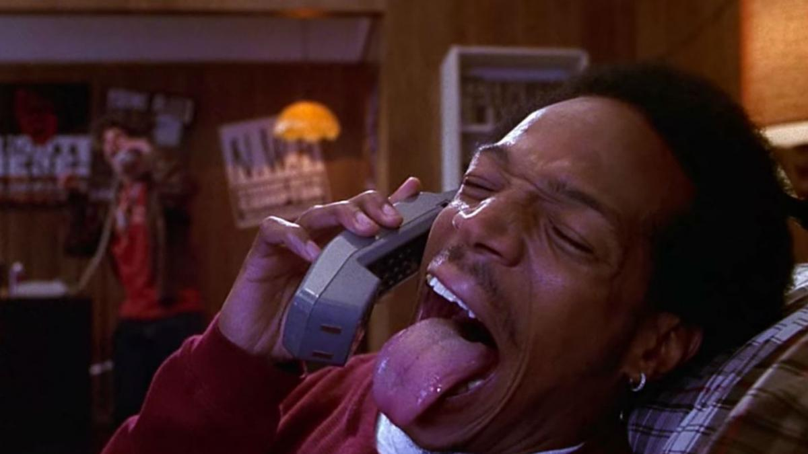

Skinny Cosas

Musica
ARTISTA: KirbLaGoop
CANCION: Star
i love you dawg
100 Thou, Ned, GBC
Yoom yoom yoom
She just wanna make it last
Take all these drugs all up out my bag
I ain't never had nuthin' close to call my own
I ain't never even had a place to call my home
She had open arms, she had wounds and scars
Telling me it didn't matter what behind bars
We can reach the stars, I can take you far
Ya don't believe me, here you go, take a couple bars
Never change who we are, what we did in the past
I want this for eternity, it forever last
Wouldn't change for the cash, I know you still the same
We forever be a hunnid, you my only lil thang
Coming clean, foreign paint, I got nuthin' else to lose
You'll forever be my main, lil baby, you are cool
You my number one star, ain't no other compare
They gon know who you are, they gon' get mad as hell
But don't worry 'bout them hoes 'cause they ain't getting shit
Keep that shit one with me, you'll forever be my bitch
But don't worry 'bout them hoes 'cause they ain't getting shit
Keep that shit one with me, you'll forever be my bitch
Prod. Nedarb
Edit : Nahall Khaghani Qajar - @deathhoader x @dogxanax
VIDEO
Para explotar tus odidos, Click Aqui
|
| Deportes o hobbis
Running
¿Cuantas veces por semana para limpiar el cuerpo?
3 veces por semana 6 kilometros diario para mantenerse SkinnyShawty |
|
|
La razón principal por la que se puede reducir a solo correr 3 veces por semana sería para minimizar el riesgo de lesión.
Como todos sabemos, correr tiene un promedio alto de lesión, y el promedio de lesión se incrementa mientras más corres.
Muchos corredores no pueden correr diario sin lesionarse
Video motivacional
cristiano ronaldo the perfect player 2008 (cancion -que es la vida)
|
|
|
Produccion musical
|
>
Contacto
Aboutme
Direccion